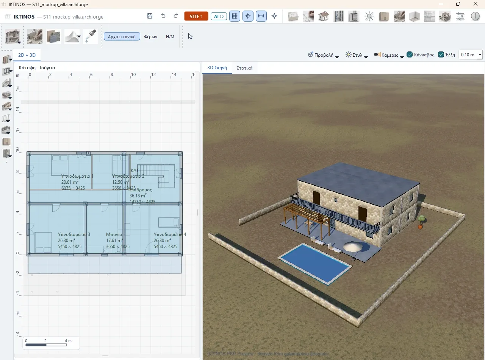
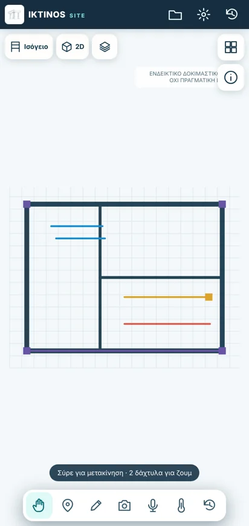
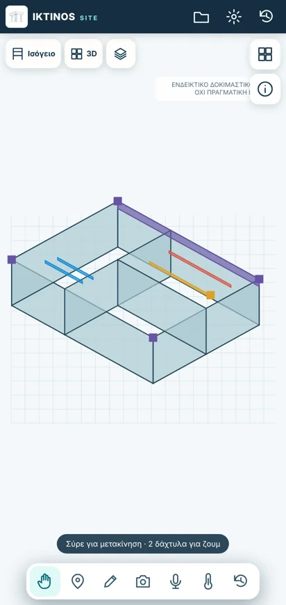

IKTINOS
IKTINOSΣχέδιο και BIM
Τοίχοι με στρώσεις, κουφώματα, πλάκες, στέγες, σκάλες, όροφοι. Κατόψεις, τομές, όψεις, φύλλα A4–A0.
Μια γραμμή σε έναν ελαιώνα. Ένα κτίριο, ως τον τελευταίο σωλήνα.
ΑΠΟ ΤΟ ΒΙΝΤΕΟ ΤΟΥ IKTINOS · ΠΑΞΟΙ, CC0Το IKTINOS κρατά ένα μοντέλο για όλο το κτίριο. Η κάτοψη, το 3D, ο φέρων οργανισμός κατά Ευρωκώδικα 8, τα Η/Μ και ο ενεργειακός έλεγχος διαβάζουν το ίδιο σχέδιο, και κάθε αλλαγή αναιρείται.
 3D · IKTINOS
3D · IKTINOS
Τα αρχιτεκτονικά, τα στατικά και τα Η/Μ δεν ζουν σε τρία προγράμματα που πρέπει να συμφωνήσουν. Αλλάζεις έναν τοίχο και ενημερώνονται η κάτοψη, το 3D, ο φέρων, τα δίκτυα και οι ποσότητες.
Τοίχοι με στρώσεις, κουφώματα, πλάκες, στέγες, σκάλες, όροφοι. Κατόψεις, τομές, όψεις, φύλλα A4–A0.
Τρισδιάστατο πλαίσιο, σεισμός EN 1998-1 με ελληνικό παράρτημα, οπλισμός κολονών και δοκών, θεμελιώσεις, ικανοτικός έλεγχος κόμβων.
Ύδρευση, αποχέτευση, ηλεκτρολογικά, ασθενή / KNX, θέρμανση, αερισμός, πισίνες κατά HD 60364-7-702, με διαδρομές και επιμετρήσεις.
U από τις στρώσεις, πίνακες ΤΟΤΕΕ 20701, θερμογέφυρες, θερμική εικόνα όψεων, ώρες ηλιασμού και σκίαση ανά παράθυρο.
Γεωδαιτικός σκελετός V1–V8 πάνω σε θόλο, κέλυφος από γυαλί, πέργκολες με κινητές περσίδες, φωτοβολταϊκά στη Βιβλιοθήκη.
«Ολοκλήρωση κτιρίου» με μία αναίρεση. Ο Βοηθός δουλεύει και χωρίς AI, με τοπικούς κανόνες· σύνδεση εφαρμογής AI με ένα κλικ.
Το IKTINOS ελέγχει κάθε έργο με τους ίδιους κανόνες και δείχνει το πρόβλημα στην κάτοψη. Οι τιμές είναι μετά την εντολή «Υπολογισμός φέροντα».
| Έλεγχος | S12 βίλα | S13 θόλος | S14 γραφεία |
|---|---|---|---|
| Κόμβοι ΣMRc / ΣMRb ≥ 1,30, και στην κορυφή | 51 / 51 · ελάχ. 1,33 | 66 / 66 · ελάχ. 1,30 | 32 / 32 · ελάχ. 1,31 |
| Ύδρευση: κρύο και ζεστό σε ένα δίκτυο | ναι | ναι | ναι |
| Αποθήκευση → κλείσιμο → άνοιγμα χωρίς απώλειες | ναι | ναι | ναι |
Τοίχος ▾ ▸ Είδος τοίχου: πέτρα εμφανής έξω, σοβάς μόνο μέσα· υλικό και πάχος ανά στρώση, το συνολικό πάχος ακολουθεί.
Συνεχόμενα κλικ στις γωνίες· για μέσα τούβλο 13 cm — ο τύπος διαλέγεται πριν και το πάχος αλλάζει μόνο του.
Εξώπορτα, πόρτες, παράθυρα από το μενού κουφωμάτων, κλικ πάνω στον τοίχο.
Πλάκα, δάπεδα, οροφές και δώμα με μία εντολή και μία αναίρεση.
Νέος όροφος: οι εξωτερικοί τοίχοι ανεβαίνουν· δύο δωμάτια, μπαλκόνι, πέργκολα ξύλινη.
Η σκάλα ακολουθεί τον κέρσορα πριν τοποθετηθεί: τύπος, ρίχτια και ύψος φαίνονται πριν το κλικ.
Ολοκλήρωση με κεραμοσκεπή, «Υπολογισμός φέροντα» (προμελέτη) και το κτίριο στο 3D.
Καταγραφή του πραγματικού προγράμματος· το χρονόμετρο μετρά τον χρόνο του προγράμματος, χωρίς τις παύσεις για τις λεζάντες. Κλικ σε εργασία = το βίντεο πηγαίνει εκεί.

Ιδιότητες κολόνας ή δοκού ▸ «Λεπτομέρειες / Ανάλυση»: το παράθυρο «Στατικά μέλους» για αυτό το μέλος.
Ν, V, M ανά συνδυασμό· μπάρες αξιοποίησης σε κάμψη, τέμνουσα, βέλος ή αξονική, πράσινο / πορτοκαλί / κόκκινο.
Ράβδοι ανά πλευρά, τσέρκια στην κρίσιμη περιοχή και στο υπόλοιπο, μορφή: περιμετρικό, διπλό, «Η», ρόμβος — μετρά στη διάτμηση.
Κάθε αλλαγή ξαναελέγχεται αμέσως· «Προτεινόμενη λύση» και «Εφαρμογή» με μία αναίρεση.
Μέλη ενός δοκιμαστικού πλαισίου· αριθμοί της ανάλυσης του IKTINOS (EN 1992-1-1 / EN 1998-1). Προμελέτη — όχι στατική μελέτη αδειοδοτημένου μηχανικού.

Ένα κουμπί δίπλα στα 2D / 3D: η αλλαγή στην κάτοψη φαίνεται αμέσως στο κτίριο.
Θερμομόνωση και στεγάνωση ανά κατηγορία, πάχος, m² από το σχέδιο, λ από ΤΟΤΕΕ 20701-2.
Η εφαρμογή εργοταξίου του IKTINOS. Το γραφείο στέλνει το κτίριο μόνο για ανάγνωση· το κινητό δεν αλλάζει ποτέ το σχέδιο, στέλνει παρατηρήσεις.



Η έκδοση δοκιμής είναι η τρέχουσα έκδοση ανάπτυξης. Χρησιμοποίησέ τη μαζί με το πρόγραμμα που ήδη έχεις και έλεγξε κάθε αποτέλεσμα πριν το καταθέσεις.